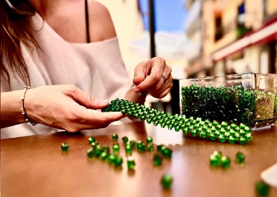

¿Quiénes somos?
En NacaRam creamos bolsos únicos hechos a mano en Tenerife, utilizando perlas acrílicas y de cristal cuidadosamente seleccionadas. Cada bolso cuenta una historia y está diseñado con amor y pasíon.
Bolso Pau: Nuestro Best Sellers
El bolso Pau es nuestra pieza más icónica hasta el momento, diseñado con 2185 cuentas y disponible en varios tonos con los que hemos intentado reflejar la belleza de la naturaleza de nuestra isla